Repowering-Projekt Simplonpass
Schlüsselfertiges Projekt mit Windmessung, technischem Projekt und Netzanschluss. Austausch und Repowering der bestehenden Anlage.
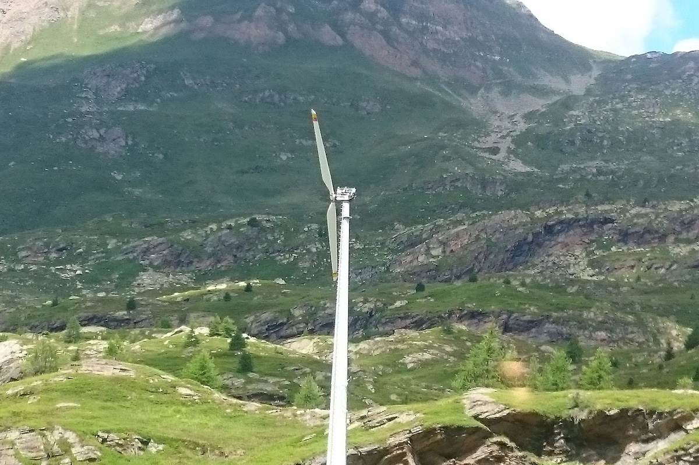
Schlüsselfertiges Projekt mit Windmessung, technischem Projekt und Netzanschluss. Austausch und Repowering der bestehenden Anlage.
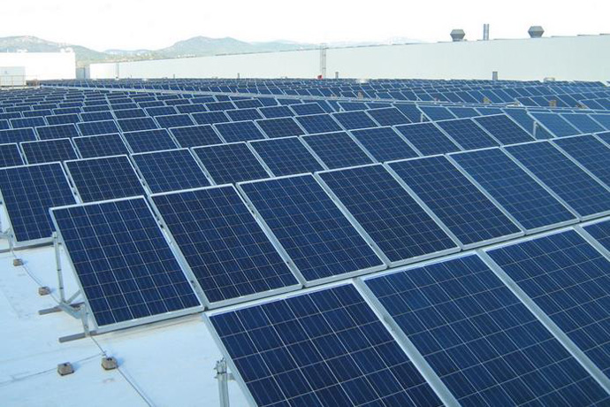
Projektentwicklung einer netzgekoppelten Photovoltaikanlage mit 450 kW in Südgriechenland.
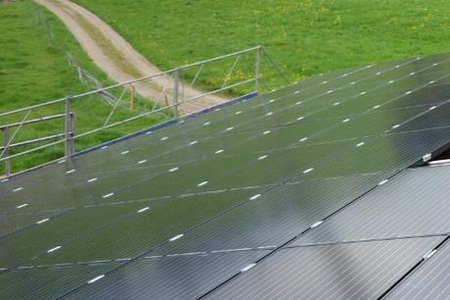
Schlüsselfertige, netzgekoppelte PV-Anlage mit 85 kW.
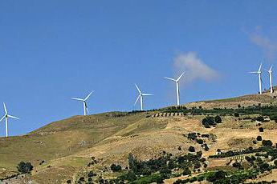
Technische und wirtschaftliche Due-Diligence-Prüfung für 15 bestehende, netzgekoppelte Windkraftanlagen.
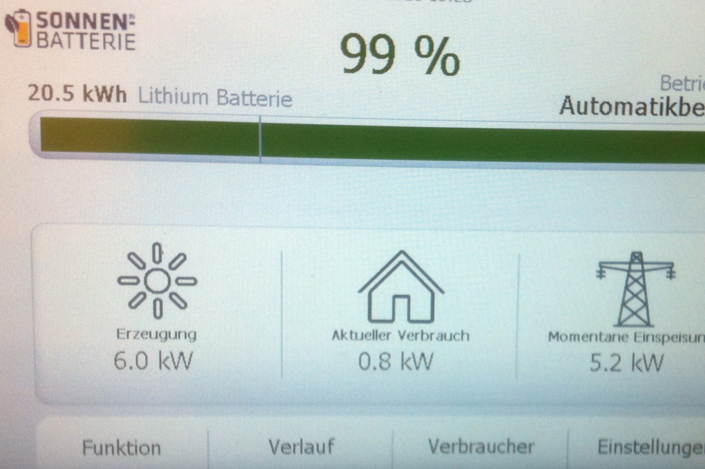
Schlüsselfertiges Projekt, einschliesslich Planung und Ausführung für ein netzgekoppeltes 22-kWh-Li-Ionen-Speichersystem.
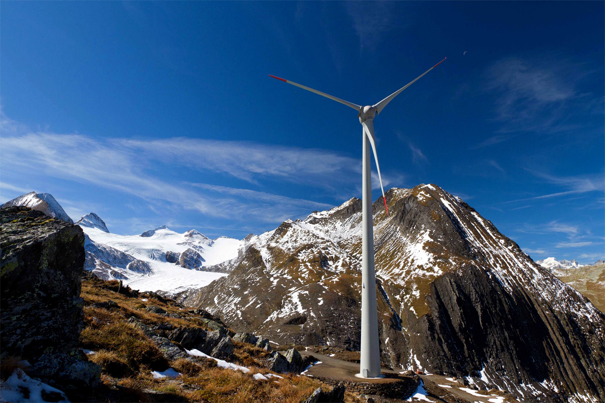
Netzplanung, Simulation transienter Vorgänge, Konzept/Studie über den Energietransport von 4 Windkraftanlagen.
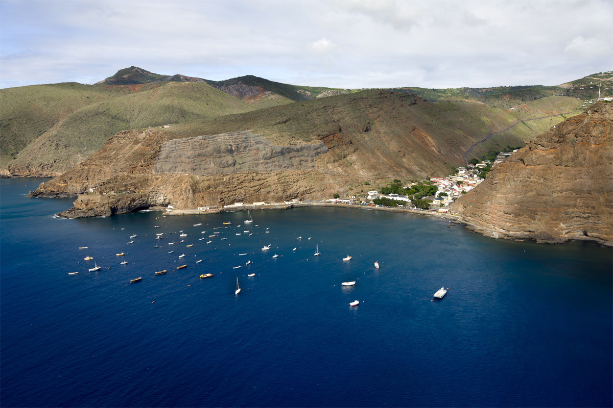
Planung & Projektentwicklung von zwei Kleinwindkraftanlagen im Parallelbetrieb mit einer Solaranlage, Insellösung.
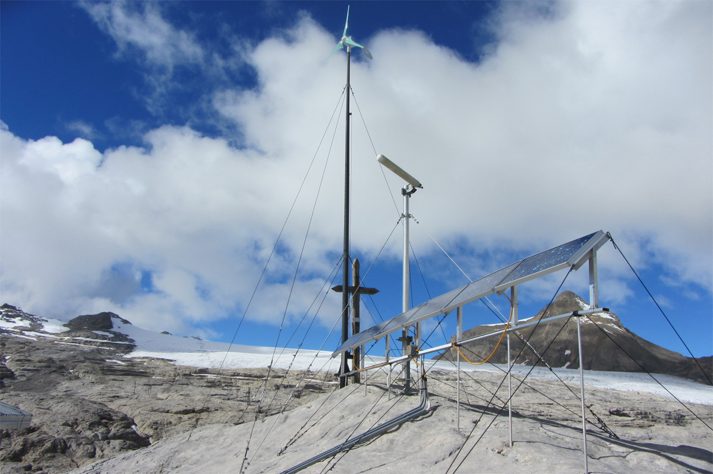
Planung, Projektentwicklung und Ausführung einer Kleinwindkraftanlage im Parallelbetrieb mit einer Solaranlage, Insellösung.
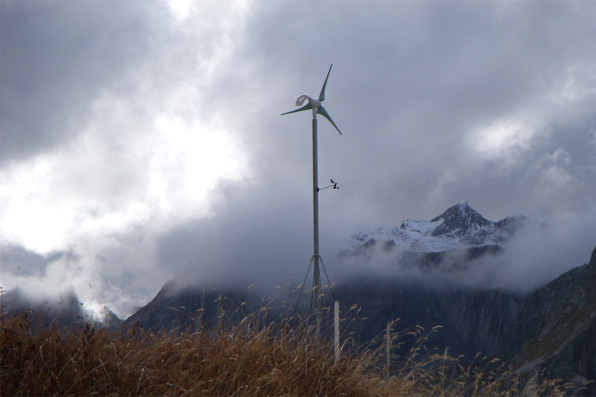
Planung, Projektentwicklung und Ausführung einer netzgekoppelten Kleinwindkraftanlage.
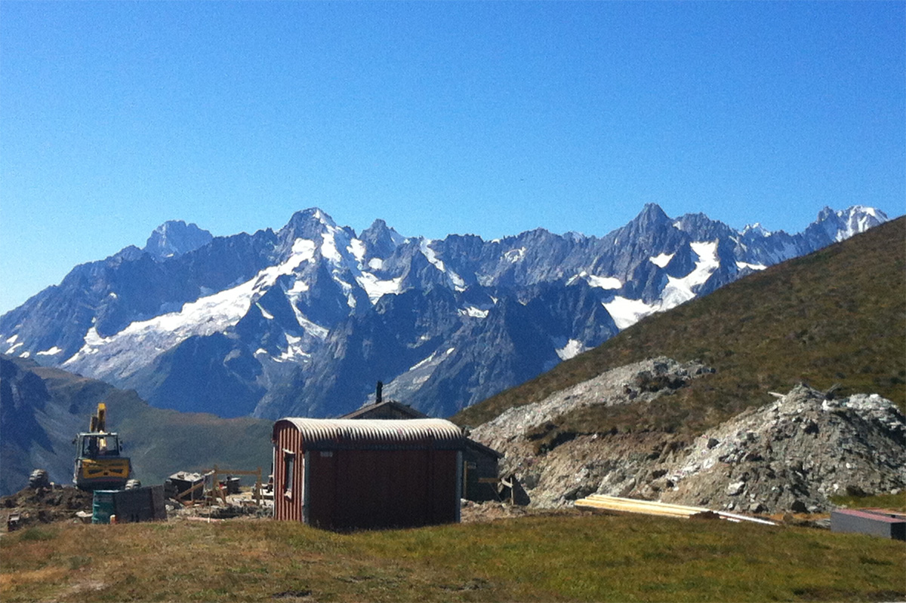
Planung, Projektentwicklung und Ausführung einer Kleinwindkraftanlage im Parallelbetrieb mit einer Solaranlage, Insellösung.
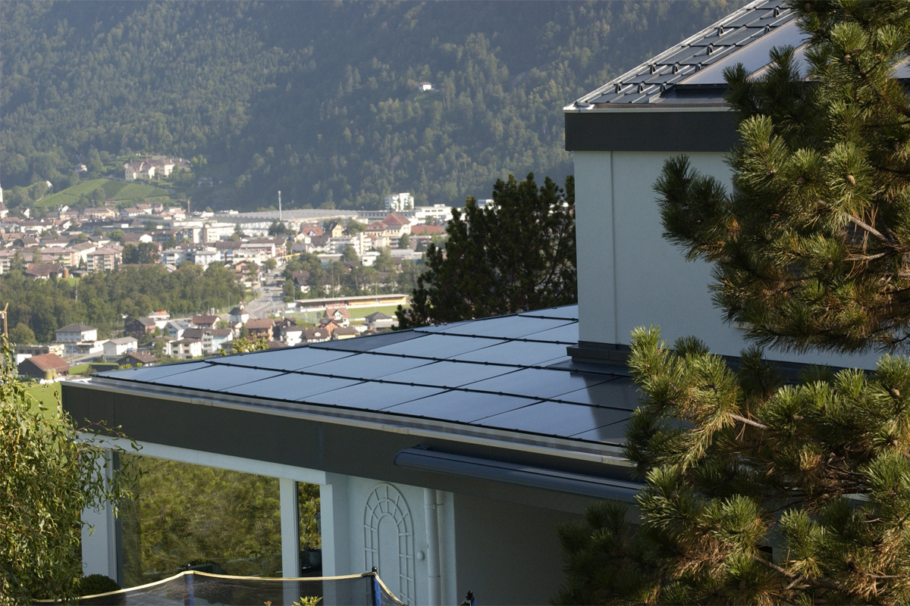
Planung, Projektentwicklung und Ausführung einer netzgekoppelten Photovoltaikanlage (PV) mit Lithium-Ionen-Speicher für ein Wohnhaus.
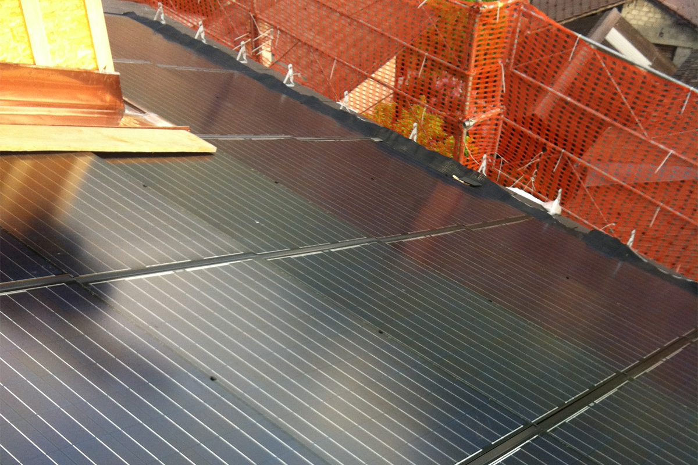
Planung, Projektentwicklung und Ausführung einer netzgekoppelten Photovoltaikanlage (PV) für ein Mehrfamilienhaus.
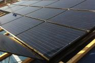
Planung, Projektentwicklung und Ausführung einer netzgekoppelten Photovoltaikanlage (PV) für ein Bürogebäude.
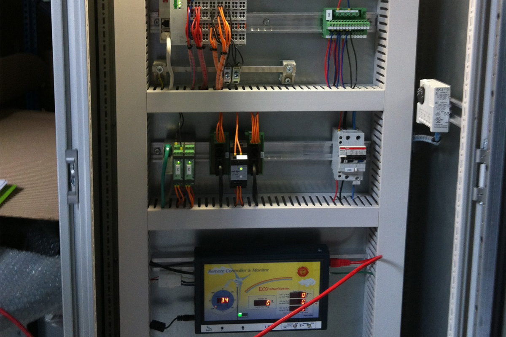
Planung, Projektentwicklung und Ausführung einer netzgekoppelten Kleinwindkraftanlage, Bürogebäude.
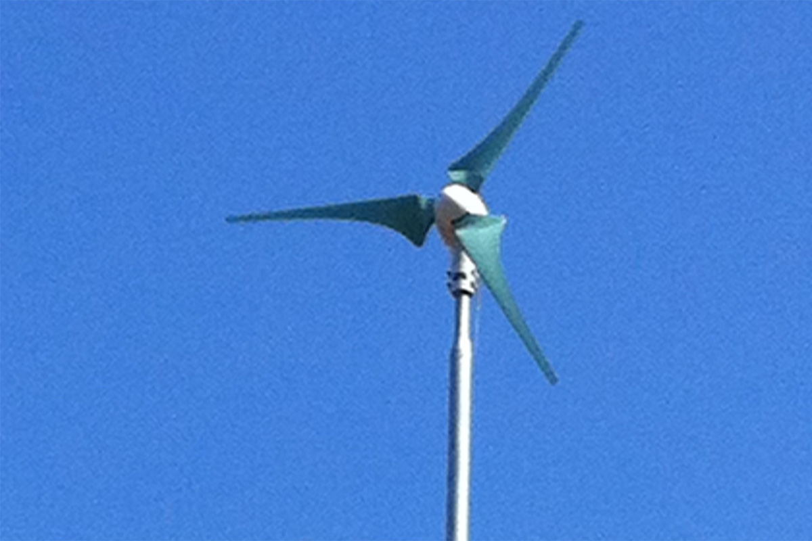
Planung, Projektentwicklung und Ausführung einer netzgekoppelten Kleinwindkraftanlage, Mehrfamilienhaus.
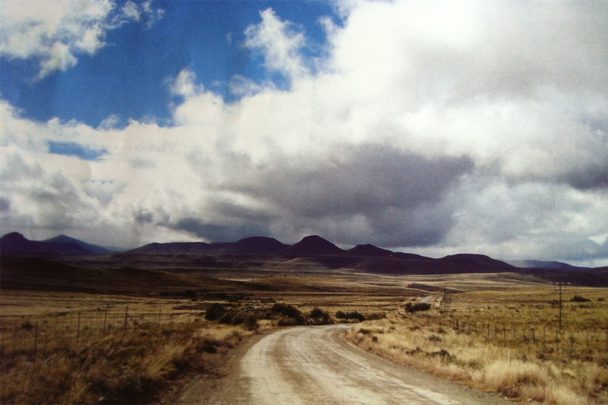
Planung und Projektentwicklung einer On-/Off-Grid netzgekoppelten Photovoltaikanlage.
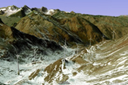
Netzplanung, Simulation transienter Vorgänge, Konzept/Studie über den Energietransport von 7 Windkraftanlagen.
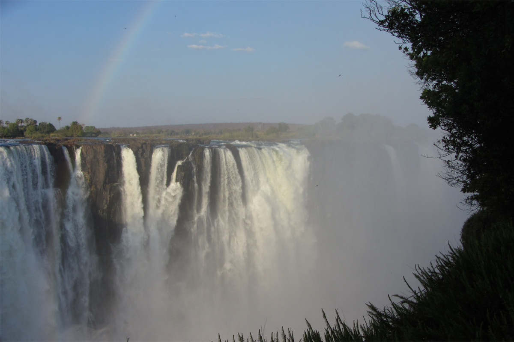
Planung einer Off-/On-Grid-Kleinwasserkraftanlage, Simulation transienter Vorgänge für Becken und Rohrleitungen, Wirtschaftlichkeitsstudien.
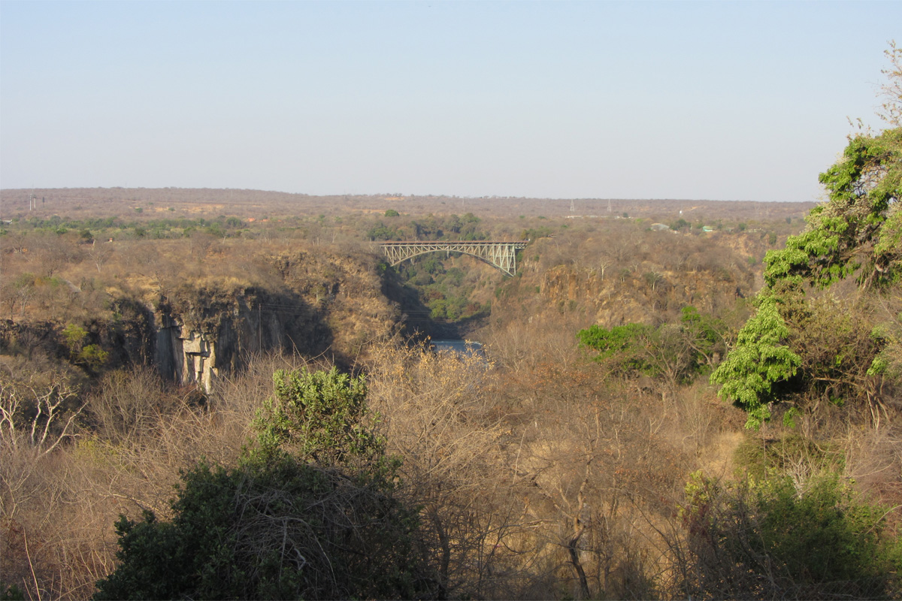
Planung und Projektentwicklung einer On-/Off-Grid netzgekoppelten Photovoltaikanlage.
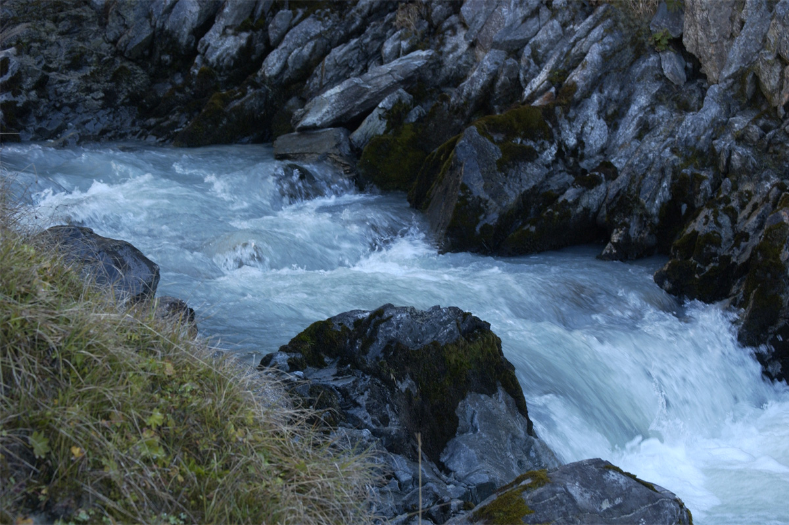
Abflussmessung, Wirtschaftlichkeitsberechnungen, Bewertung verschiedener Alternativen.
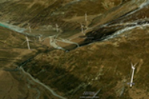
Netzplanung, Simulation transienter Vorgänge, Konzept/Studie über den Energietransport von 6 Windkraftanlagen.